Corporate IT Themed Lego Sets Collection
During a GSE UK technical conference, I was fortunate to win an IBM z16 server Lego set. However, a year later, IBM did not bring the DS8A10 storage system Lego model to the conference, despite using it as a promotional item at other events.
Knowing that IBM had previously created Lego models for older Mainframe systems, I decided to start collecting building instructions for the DS8A10, other IBM systems, and IT-themed sets from other companies as well.
The older building instructions released by IBM did not include a list of brick parts (Lego Element IDs for the Pick a Brick service). Additionally, the IBM sets used printed bricks for the IBM and product logos, which I had to replace with custom stickers. I created these stickers based on the original instructions and photographs of the official sets.
Using the instructions below, you can order the necessary bricks from Lego's Pick a Brick service to build the models yourself. You can also print the required stickers to add an extra touch of authenticity to your set.
Shortcuts:
Update history
December 17, 2025 - Added IBM z17
November 02, 2025 - Added Dell EMC PowerEdge Server + Easter Egg (Lego Barcelona's Witch)
July 09, 2025 - Added Trane CTV chiller
May 26, 2025 - Added Cisco IP Phone
April 18, 2025 - Added Intel Lakefield Processor set.
February 22, 2025 - Added Cisco Cloud Management for Cisco Catalyst networking set.
February 2, 2025 - Sort the sets in the Shortcuts menu alphabetically, and correct the IBM zBC12 sticker set.
January 12, 2025 - Added HPE Apollo 6500 Gen10 Plus
December 19, 2024 - Added Ironport D.I.Y. Email Security Kit
December 4, 2024 - Added IBM z10 Enterprise Class Mainframe server
December 3, 2024 - Added HPE Alletra Storage System
November, 2024 - The initial release of the website, focusing first on IBM sets, followed by the addition of Netflix OCA, IBM z114, Dell Unity XT + DP4400, and IBM zBC12 in subsequent updates.
IBM z16 and IBM LinuxONE 4 Mainframe server
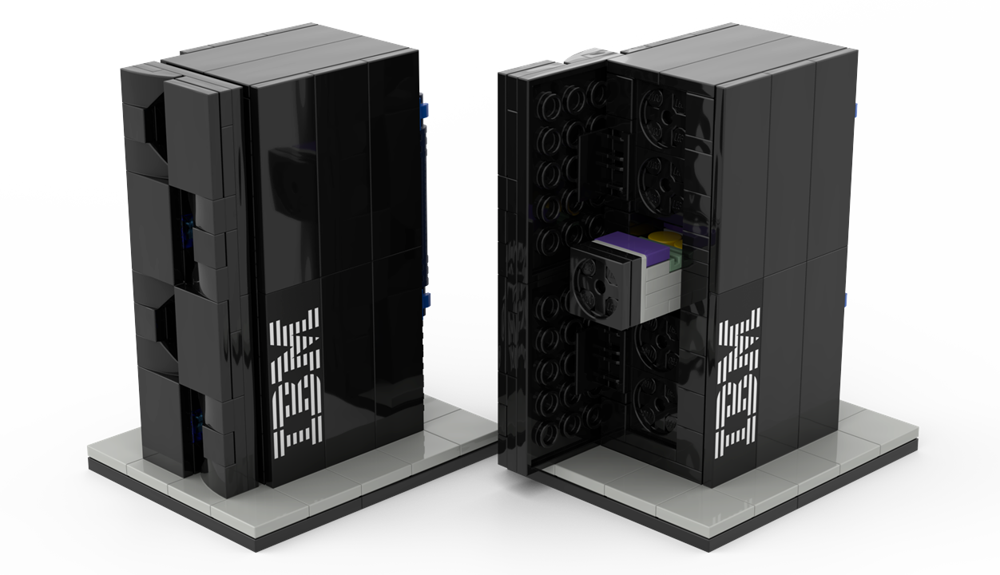
The IBM z16 is the 16th generation of IBM Mainframe servers. This Lego model represents the single-frame configuration, featuring a functional opening door and a pull-out processor drawer. The set includes two color accents: blue for z16 (z/OS workloads) and yellow for LinuxONE (TuX tasks). It is composed of 184 bricks and was released in 2023.
Building instructions, bricklist included (copy of the original PDF document)
Stickers: A4 or Letter (substitutes for originally printed bricks)
The z16 / LinuxONE set released by IBM, distributing the Lego blocks in a plastic bag, along with a QR code on a piece of paper, which point to the assemply instruction PDF.
Note:
IBM DS8A10 Storage System
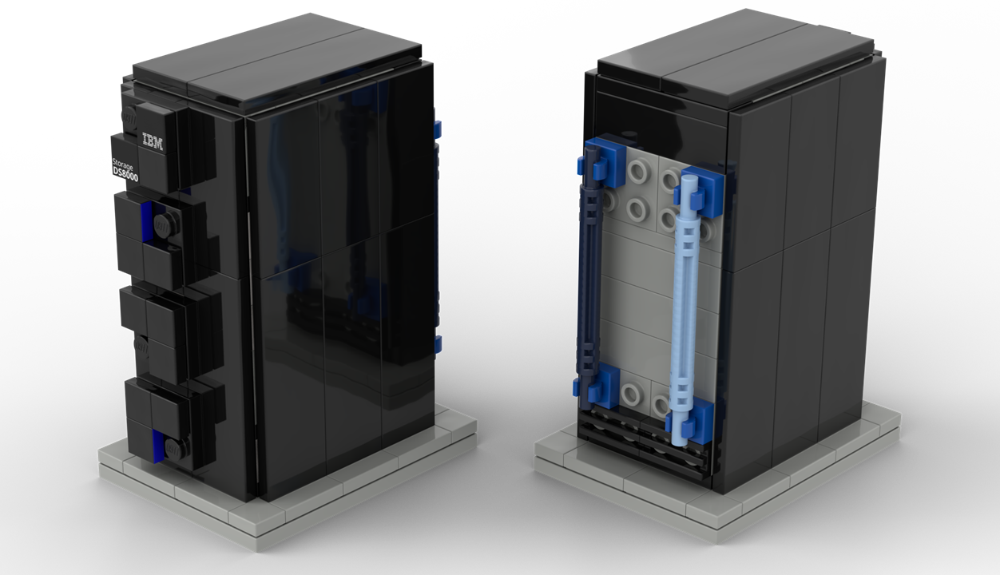
Netflix Open Connect Appliance
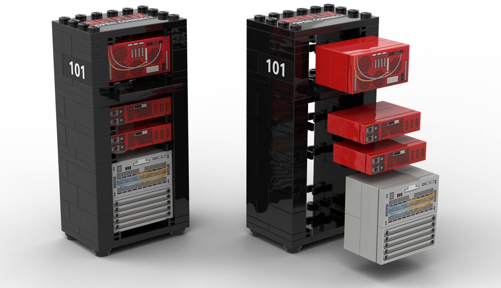
The Netflix Open Connect Appliance is a specialized caching server designed to store and deliver Netflix content locally within internet service provider (ISP) networks, improving streaming efficiency and reducing internet traffic.
The LEGO edition was created by Nat Morris, a former Netflix employee, as a holiday gift for his team. The original set featured multiple Open Connect Appliances (flash and storage), an Arista router, and Ken and Gina minifigures. They likely representing Ken Florance, who was Vice President of Content Delivery at Netflix, and Gina Haspilaire, who has held leadership roles in telecommunications and partnerships. Additionally, a unique box for the set was designed by Sophinie Kim, another former Netflix employee, which included several Easter eggs, such as BGP ASNs hidden in the barcode.
As I was unable to obtain the original build manual, the Netflix Open Connect Appliance LEGO set was recreated based on photos shared on social media, with the exception of the minifigures. This LEGO set features removable rack elements, consists of 75 bricks (excluding the minifigures, meanwhile original packaging show 120 bricks), and was originally released in 2011.
Building instructions (re-creation, may not 100% accurate)
Stickers: A4 or Letter (substitutes for originally printed bricks)
The Open Connect Appliance set released internally within Netflix by Nat Morris. Social media sources are Nat Morris@LinkedIn, Business Bricks@Facebook, Nat Morris@Twitter.
IBM z114 Mainframe Server
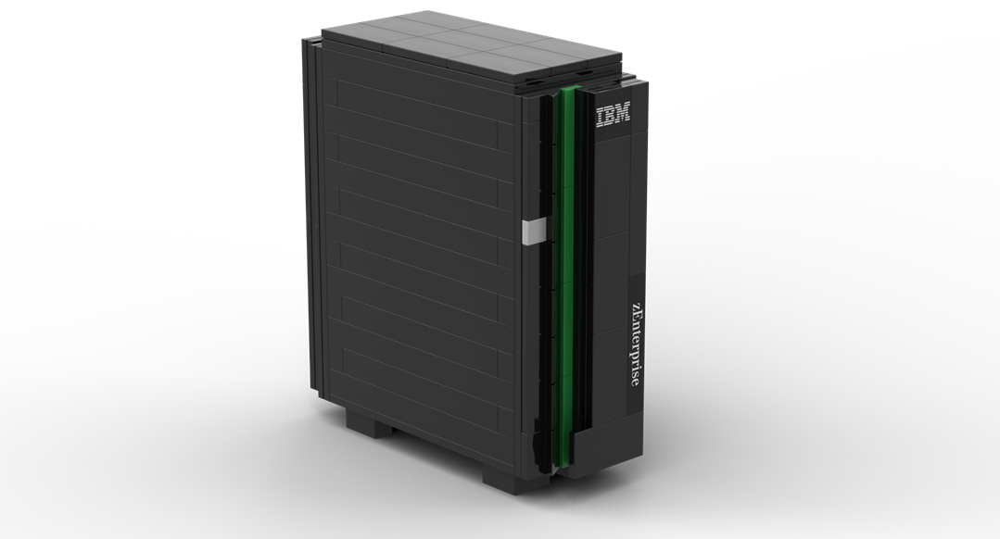
The IBM z114 Mainframe was part of the 11th generation of IBM Mainframe servers. While the z196 was designed for large organizations, the z114 made mainframe computing accessible to mid-sized businesses. This Lego set has no movable elements, consists of 143 bricks, and was released in 2011.
Building instructions (scan of the original document, print on both sides / flip on short edge)
Bricklist (not part of instruction leafet)
Stickers: A4 or Letter (substitutes for originally printed bricks)
The z114 set released by IBM included Lego blocks distributed in a cardboard box, accompanied by a small paper manual. Special thanks to Michael Grossmann for his support in obtaining an assembly manual.
Dell EMC Unity XT Storage Array + Integrated Data Protection Appliance DP4400
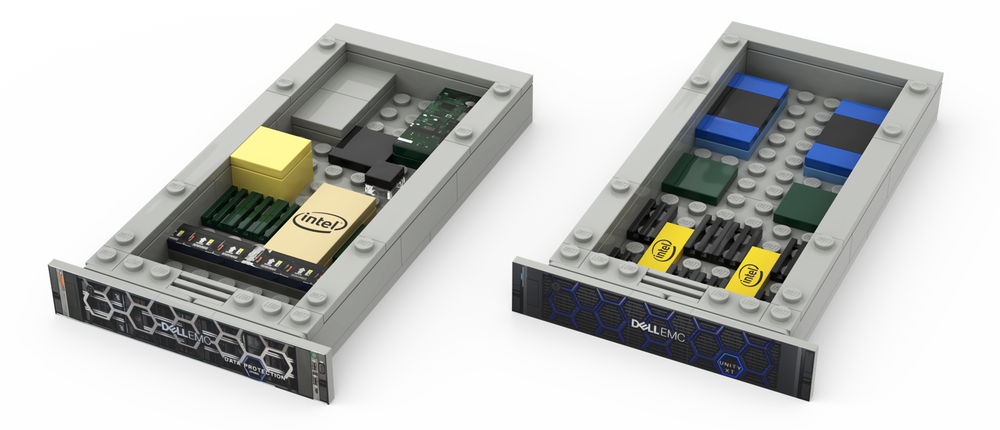
Dell EMC Unity XT provides high-performance storage for databases, virtual environments, file shares, and applications, meanwhile IDPA DP4400 handles data protection and recovery, optimized for safeguarding data against loss or corruption. This Lego set shows two server racks with internal components, consists of 92 bricks (even the original packaging shows 70), and was released in 2020.
Building instructions (scan of the original document)
Bricklist (not part of instruction leafet)
Stickers: A4 or Letter (substitutes of original stickers, recreated using original product photographs)
The Dell EMC Unity XT Storage Array + IDPA DP4400 set released by Dell included Lego blocks, distributed in a cardboard box, accompanied by a small paper manual and stickers. Source of scanned pages is Hakaslak@Reddit. Also thank your for Michael Mulligan.
IBM zBC12 Mainframe Server
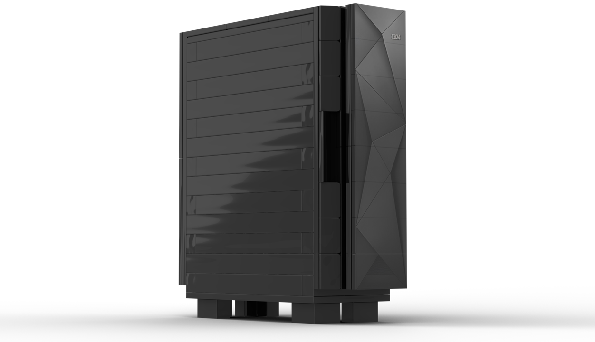
The IBM zBC12 was a cost-effective, high-performance mainframe server designed for mid-sized businesses, offering up to 36% more capacity per core compared to its predecessor, the z114. This Lego set has no movable elements, consists of 115 bricks, and was released in 2013.
Building instructions (scan of the original document, print on both sides / flip on short edge)
Bricklist (not part of instruction leafet)
Sticker: A4 or Letter (substitutes of original sticker, recreated using original product photograph)
The z114 set released by IBM included Lego blocks distributed with a small paper manual. Special thanks to Michael Grossmann for his support in obtaining an assembly manual.
HPE Alletra Storage System
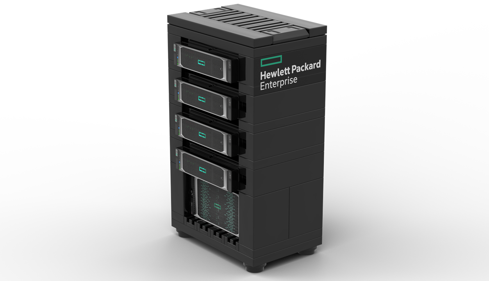
The HPE Alletra is a hybrid storage solution offering high performance, and resiliency for general-purpose workloads, with cloud-like operational simplicity and scalability. Meanwhile the HPE SimpliVity 380 is a hyperconverged infrastructure (HCI) solution that integrates compute, storage, and networking into a single platform. (Built on HPE ProLiant DL380 servers.) This Lego set has removeable drawers, consists of 95 bricks, and was released in 2013.
Building instructions (copy of the original PDF document)
Bricklist (not part of instruction leafet)
Sticker: A4 or Letter (substitutes of original stickers, recreated using original product photographs)
The HPE Alletra set released by HP, included Lego blocks distributed in a cardboard box, along with a QR code to the instructions on the Minifiglabs website. Thank you to DataHoarder@Reddit for link sharing.
IBM z10 Enterprise Class Mainframe server
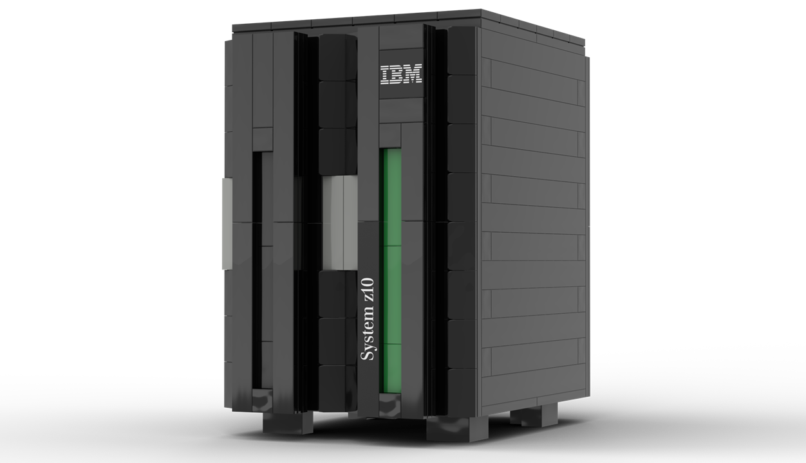
The IBM z10 Enterprise Class Mainframe server introduced the quad-core processor design, significantly improved processing capacity, memory scalability (up to 1.5 TB), and overall performance enhancement for enterprise workloads. This Lego set has no movable element, consists of 63 bricks, and was released in 2008.
Building instructions (scan of the original document)
Bricklist (not part of instruction leafet)
Sticker: A4 or Letter (substitutes for originally printed bricks)
The z10 EC set released by IBM, included Lego blocks distributed in a cardboard box, accompanied by a small paper manual. Special thanks to Michael Grossmann for his support in obtaining an assembly manual.
Ironport D.I.Y. Email Security Kit
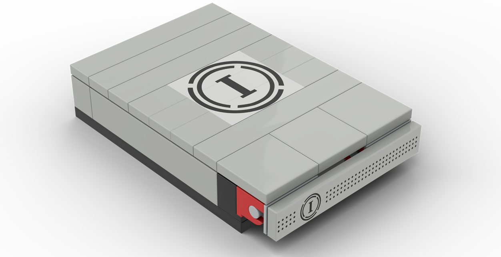
The Ironport Email Security server appliances designed for secure email messaging, to protect organizations against spam, phishing, viruses, and other email-related threats. Cisco acquired Ironport in 2007, and integrated into their email security portfolio. The Ironport D.I.Y. Email Security Kit was a promotional Lego set. It feature an accessible front panel, consists of 24 bricks, and was released around 2006.
Building instructions (re-creation)
Bricklist
Sticker: A4 or Letter (substitutes original stickers)
The D.I.Y. Email Security Kit set released by Ironport, included Lego blocks distributed in a cardboard box, accompanied by a small paper manual. The building instructions were re-created based on product photos found on websites such as Worthpoint, and Reddit.
HPE Apollo 6500 Gen10 Plus
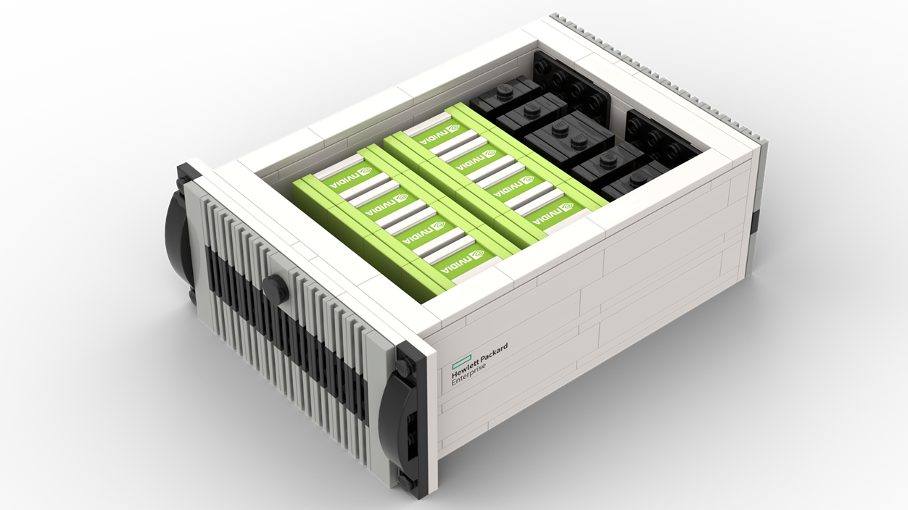
The HPE Apollo 6500 Gen10 is a high-performance server designed for AI, machine learning, and HPC workloads, featuring up to 8 GPUs, Intel Xeon processors, and advanced cooling for data-intensive computing. The HPE Apollo 6500 Gen10 Plus was a promotional Lego set released for HPE partners in the DACH region. It has no movable elements, consists of 374 bricks, and was released in 2021.
Building instructions (re-creation)
Bricklist
Sticker: A4 or Letter (substitutes original stickers)
The HPE Apollo 6500 Gen10 Plus set released by HPE, included Lego blocks distributed in a plastic bag, accompanied by a paper manual. The building instructions were re-created based on assembly video found on YouTube: Installing a HPE Apollo 6500 Gen10 Plus with NVIDIA for High Performance Computing! shared by The BEWE Channel.
Cisco Cloud Management for Cisco Catalyst networking
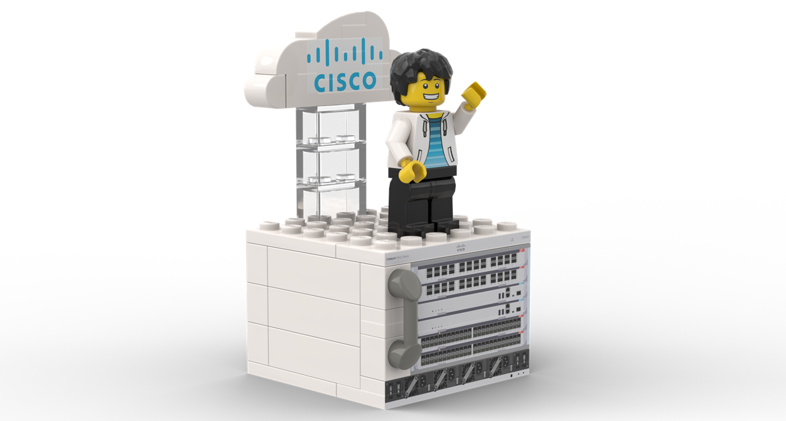
The Cisco Catalyst 9600 series switches is built for the high-speed, secure, scalable, and automated networking demands of cloud computing. Its advanced features make it an ideal choice for enterprises, data centers, and hybrid cloud environments. The "Cloud Management for Cisco Catalyst Networking" was a promotional LEGO set released by Cisco as part of their infrastructure transformation solutions campaign. It consists of 45 bricks, has no movable elements, and was released in 2023.
Building instructions / DE version (copy of the original PDF documents)
Bricklist
Sticker: A4 or Letter (substitutes for originally printed bricks)
The "Cloud Management for Cisco Catalyst Networking" set released by Cisco. The building instructions were found on the internet: English version and German version
Note:
- Lego's Pick a Brick service doesn't offer minifigures; therefore, no element ID is provided for that in the brick list document above. However, the sticker document includes a label for a minifigure torso, as Lego shops offer a wide variety of minifigures.
Intel Lakefield Processor
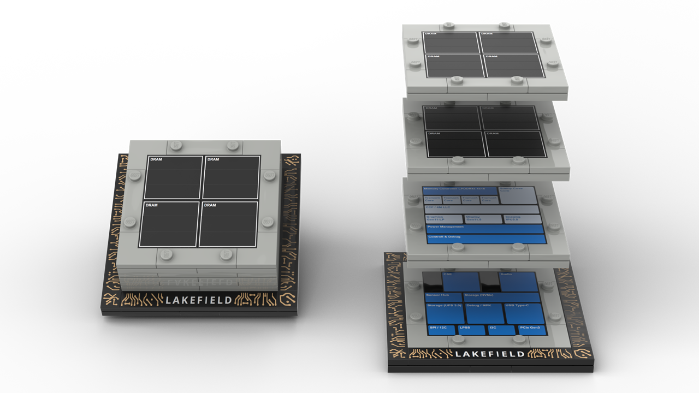
Intel's Lakefield processor was revolutionary as the first x86 chip to use a hybrid architecture, combining high-performance and power-efficient cores for better battery life and responsiveness. It introduced 3D stacking, enabling a compact form factor by vertically layering components, including memory.
The "Intel Lakefield" was a promotional LEGO set released by Intel in a CPU like box. It consists of 90 bricks, has stackable layers, and was released in 2020.
Building instructions (re-creation)
Sticker: A4 or Letter (substitutes for originally printed bricks)
The "Intel Lakefield" set released by Intel. The building instructions were re-created based on assembly video found on YouTube: Lakefield' Processors: Intel Core Processors with Intel Hybrid Technology shared by Intel Newsroom Channel.
Cisco IP Phone

The Cisco 7960 is an IP phone introduced in the early 2000s. It was revolutionary because it replaced traditional analog phones with network-based digital calling and enabled features like centralized call management, voicemail integration, and easy remote provisioning. Its robust design and compatibility with Cisco CallManager made it a popular choice during the early shift to IP telephony.
The “Cisco IP Phone, CP-7960” LEGO set was released by Cisco during their Las Vegas 2024 conference and later became commercially available through the Cisco Merchandise Store. The LEGO phone comes in a brown cardboard box, just like the original device (link). It consists of 67 bricks, features a rotating stand, and was released in 2024.
Building instructions (scan of the original document)
Bricklist
Special thanks to Ben Ng and Bill Burnam for their support in obtaining the assembly manual.
Trane CTV centrifugal water-cooled chiller
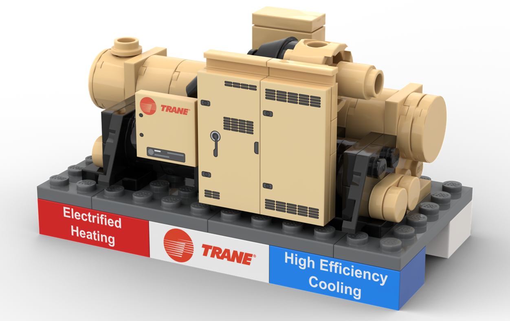
The Trane CenTraVac is a high-capacity, centrifugal water-cooled chiller designed for continuous, large-scale cooling. In a data center, it’s valuable because it reliably produces chilled water for precision air-handling units, maintaining tight temperature control 24/7 to protect critical IT equipment.
The “TRANE CTV” LEGO set was released by Trane as a promotional gift in a cardboard box with a QR code to the assemply instructions. (It was also available for purcase from their brand merchandise store).
It consists of 83 bricks (also there is an 81 brick variant), has no movable elements, and was released in 2023.
Building instructions (copy of the original document)
Bricklist
Sticker: A4 or Letter (substitutes for originally printed bricks)
Dell EMC PowerEdge Server
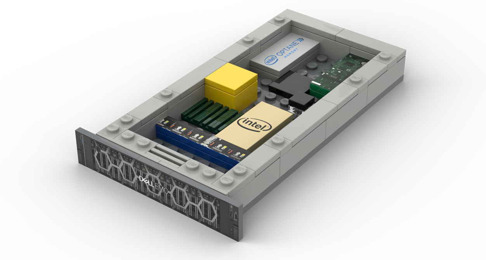
The 2U Dell EMC PowerEdge server family delivers a balanced blend of performance, scalability, and density, ideal for virtualization, data analytics, and software-defined storage. These servers support dual-socket processors, large memory capacity, and extensive storage and I/O options to meet the demands of modern enterprise and data-center workloads.
The "Dell EMC PowerEdge Server" LEGO set was released by Dell as a promotional gift in a cardboard box with assemply instructions leafet.
It consists of 56 bricks (also there are other variants), has no movable elements, and was released in 2019.
Building instructions (scan of the original document)
Bricklist
Sticker: A4 or Letter (substitutes original stickers)
Special thanks to Digital M in obtaining the assembly manual.
IBM z17 and IBM LinuxONE 5 Mainframe server
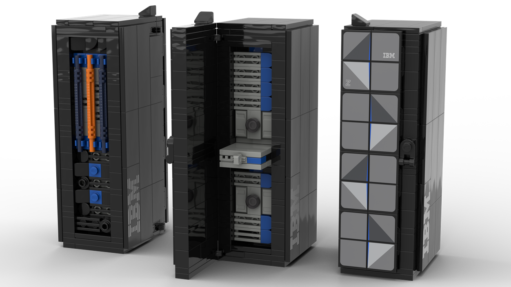
The IBM z17 Mainframe server expands AI capabilities with improved on-chip AI accelerator in the Telum II CPU, and introduces the Spyre card for more complex and larger AI models.
This Lego set represents a single-frame configuration, featuring a functional opening door and a pull-out processor drawer. The set includes two color accents: blue for the z17 and orange for the LinuxONE variant. It is composed of 273 bricks and released in 2025.
The "IBM z17 and IBM LinuxONE 5" Lego set was a promotional gift by IBM, distributed in a plastic bag with QR code linking to the building instructions.
Building instructions (copy of the original PDF document)
Bricklist
Sticker: A4 or Letter ((substitutes for originally printed bricks)
Special thanks to Dani B. and Tamas M. who won a z17 Lego set at the GS UK 2025 conference, and made it possible for me to create sticker set and bricklist.
Stay tuned
Following instructions release is in progress, their brick list & stickers creation is ongoing:
- Pure Storage FlashArray//XL (76 brick pcs, released in 2025)
- Dell PowerStore server (60 brick pcs, released in ??)
- Dell EMC PowerEdge Server (46 bricks pcs, released in ??)
Looking for
Please let me know if you are aware of any unlisted IT-themed Lego sets, and if you can share the building instructions, that would be even better. :-)
For example, but not limited to:
- Dell PowerStore Prime (56 brick pcs,released in 2024)
- Dell PowerStore Prime (58 brick pcs,released in ??)
- Dell AI Factory (66 brick pcs, released in ??)
- Dell VmWare Combination Safe (286 brick pcs, released in ??)
- Dell EMC VxRail Hyperconverged Infrastructure (63 brick pcs, released in ??)
- Dell EMC VxRail Hyperconverged Infrastructure (58 brick pcs, released in ??)
- Cisco Ciscan Figure (?? brick pcs, 2016?)
- IBM Quantum System One (?? brick pcs, 2022?)
Easter Egg
This section has nothing to do with corporate IT, but it’s somehow connected to the LEGO topic.
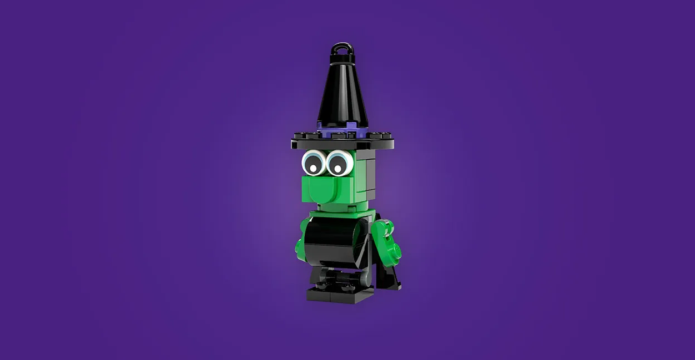
The LEGO Store in Barcelona organized a unique Halloween event in 2025, where visitors could build a LEGO Witch and take it home. (After waiting at least an hour in the queue :-)
If you’d like to build it yourself, you can download the building instructions along with the brick list for LEGO 6565159 Witch.
This is a scan of the original paper sheet that was given out at the LEGO Store.
Disclaimer
The IBM logo and associated branding are the property of International Business Machines Corporation (IBM). The LEGO logo and associated branding are the property of the LEGO Group. The Dell logo and associated branding are the property of Dell Technologies Inc. The HPE logo and associated branding are the property of Hewlett Packard Enterprise. The VMware logo and associated branding are the property of VMware, Inc. The Cisco logo and associated branding are the property of Cisco Systems, Inc. The Netflix logo and associated branding are the property of Netflix, Inc. The Intel logo and associated branding are the property of Intel Corporation. The Trane logo and associated branding are the property of Trane Technologies plc.
This website is not affiliated with, endorsed by, or associated with IBM, the LEGO Group, Dell, HPE, VMware, Cisco, Netflix, Intel, or Trane in any way. It is created solely for entertainment purposes. All trademarks, logos, and images remain the property of their respective owners.
Rendered images created with BrickLink Studio software. Commercial use of the provided materials, including but not limited to the sale of replicas, is strictly prohibited.
This website uses Google Analytics, a web analytics service provided by Google. You can opt out of Google Analytics tracking by using tools like the Google Analytics Opt-Out Browser Add-on.
This website created & owned by Tamas Domjan.
|